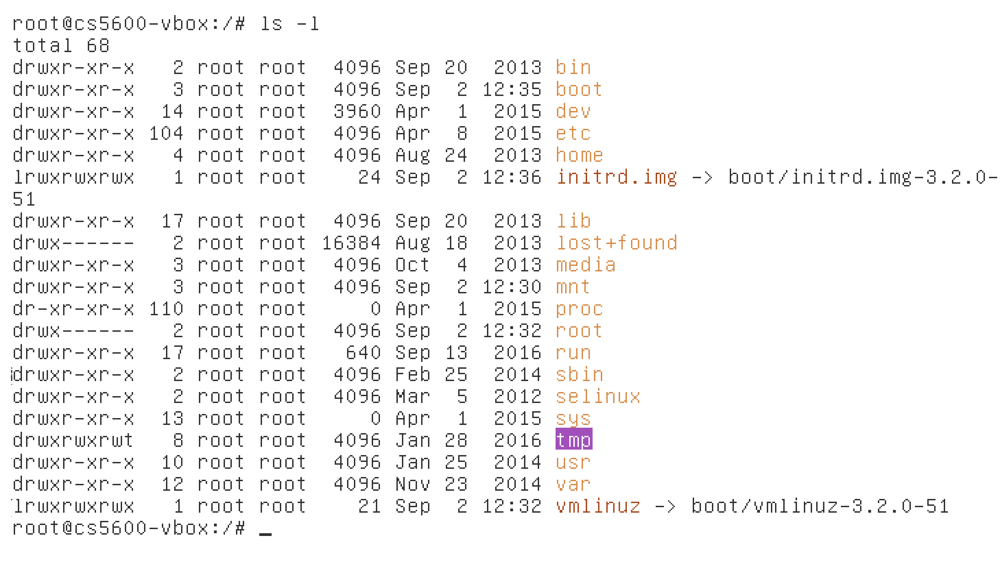
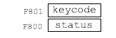
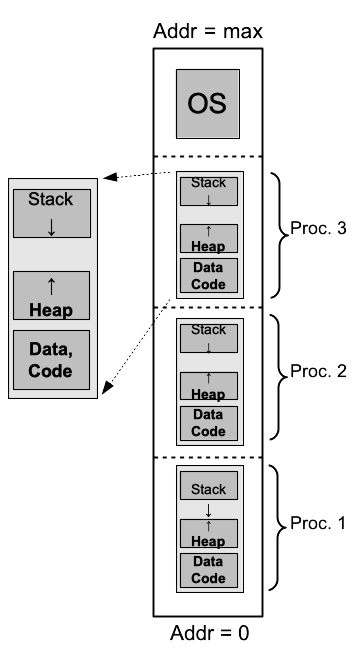
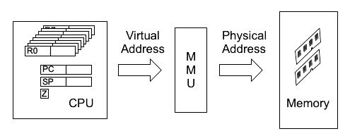
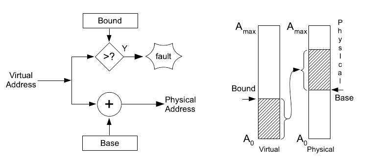

Other stuff from peter to integrate
Contents
7. Other stuff from peter to integrate#
7.1. from Intro#
8. Introduction#
This textbook is for the CS5600 class in the Northeastern College of Computer and Information Science, based on the design of CS5600 starting in Fall of 2008. The goal of this class is not to teach you how to write an operating system—that is an obscure skill, practiced by far fewer people than you might think. Nor is it to learn how to use an operating system—depending on the type of use, that would be system administration, programming, or just using a computer. Instead the goal is to teach you how computers work, by describing the interacting parts underneath the user and programming interfaces.
{#ch1:fig:console width=”80%”}
For an example of what this means, consider running a simple command
such as ls on a Linux system. In
[ch1:fig:console]{reference-type=”autoref”
reference=”ch1:fig:console”} we see the screen of a system booted in
text mode, using the simple character display that the BIOS uses. In
responding to the keystrokes typed by the user, we can identify not only
the basic actions being performed (“run the ls -l command with output
to the console”) but a large number of interacting actions and
components as well:
the keyboard control hardware (assuming an old-fashioned PS/2 keyboard)
interrupts the processor, causing it to run a portion of the keyboard
input driver.
The driver reads data from the keyboard and calls scheduling functions
to wake the shell process, which was sleeping waiting for input.
the shell process spawns a copy of itself, by invoking a system call
which copies some of the shell process state and shares other parts of
it between the *parent* and *child* processes using the virtual memory
system.
The new process invokes the `exec` system call, causing the operating
system to map the `/bin/ls` binary into the process address space.
As `ls` starts up, the dynamic loader loads additional shared libraries
into the process address space; these as well as the `ls` code itself is
loaded into memory on demand as the CPU accesses them.
`ls` invokes system calls to read the list of files in the current
directory.
The file system code receives requests to read files containing the
executable and libraries, as well as the directory listing request from
the `ls` program itself, and in turn requests data from the disk (via
the block device system) to fulfill these requests.
Since the example was actually running in a virtual machine, not a
physical machine[^1] the hardware interactions described above were
actually emulated by another software system (i.e. VirtualBox) which
translated them into requests to the underlying operating system, which
in turn interacted with the real keyboard and screen.
The remainder of this book, and the corresponding class, is concerned with the detailed analysis of the interactions involved in performing this simple operation. The major sections of this text concern:
**OS organization:** Memory organization and OS interface to decouple
applications from hardware and OS details, context switching, and system
calls. This section describes and uses a simple computer, described more
fully in the appendices.
**Synchronization:** Beginning with practical problems arising from
multiple simultaneous actions, we describe methods such as semaphores
and monitors to control simultaneous actions, as well as methods to
reason about the operation and performance of parallel operations.
**Virtual memory:** At the hardware level, how is address translation
implemented via the MMU, TLB, and page table? In the OS, how are page
faults used to implement copy-on-write, demand loading, and paged
virtual memory?
**Block devices:** These are devices such as disks, RAID arrays, and
SSDs, used for storing files and similar information. Topics covered
include performance and interfaces, I/O operation at a hardware level,
and methods of structuring I/O systems for reliability (RAID),
manageability (logical volume management) and efficiency
(deduplication).
**File systems:** What is a file system and what are its operations? How
do we implement these, and how do we lay files out on disk?
**Security:** What are the goals of security mechanisms in an operating
system? How can we specify and implement policies to control access and
operations?
The objective of the class is to be able to identify the steps involved in this and other computer operations. In learning this we will touch on hardware, device drivers, scheduling, virtual memory, and networking. We focus on behavior—i.e. the sequence of events which occurs in response to an input, and results in an output. This behavior cuts across layers and subsystems, as an event at the hardware level may trigger actions within a device driver, then in the core of the operating system, within a user process, etc. Rather than looking at the operating system in a structured way we are going to follow these sequences of behavior and see where they lead.
8.1. Peter#
9. Program and OS Organization {#chap:osbasics}#
This chapter begins by defining a very simple computer, with assembly language instructions, a 16-bit address space, and memory-mapped peripherals.1 We will use this computer as an example as we talk about the simplest operating systems.
We then examine simple methods of organizing and running a program on this computer. We extend these methods to hide hardware dependencies, insulate against changes in operating system details, and allow for program loading and execution—at this point we have achieved a simple single-user OS, similar in many ways to MSDOS 1.0.
After this we examine multi-processing and context switching, allowing multiple programs to be running simultaneously. Finally we examine what additional features are needed to protect the operating system from the user, and users from each other. At this point we have achieved a simplified version of a modern operating system; we compare it to Linux and Windows.
{#fig:ch2:arch width=”85%”}
9.1. A Simple Computer#
We use a fictional 16-bit computer, shown in Figure 1.1{reference-type=”ref” reference=”fig:ch2:arch”}. It has 8 general-purpose registers, R0-R7, holding 16 bits each, as well as a stack pointer (SP) and program counter (PC), and 64 KB (\(2^{16}\)) of memory which may be accessed as 8-bit bytes or 16-bit words.
The examples below use the following instructions:
LOAD.B, LOAD.W - load a byte or a word from the indicated address, which
may be an absolute address (i.e. a number) or contained in a register.
LOAD.I - load a constant value into a register. (called an "immediate"
value for unknown reasons)
STORE.B, STORE.W - store a byte or word from a register into memory.
MOV - copy the contents of one register to another.
ADD, SUB - add or subtract one register (or a constant value) to or from
another register. Sets the Z flag if the result is zero.
CMP - compare a register to another register or a constant value.
Subtracts the second value from the register, sets the Z flag
appropriately, and then throws away the result.
JMP - jump to the indicated address.
JMP_Z, JMP_NZ - jump if the Z flag is set (Z) or not set (NZ)
PUSH - push the 16-bit value in the indicated register onto the stack
POP - pop the 16-bit value top of the stack and place in the indicated
register.
CALL - call a subroutine by pushing the *return address* (i.e. the
address of the next instruction) onto the stack and jumping to the
indicated address.
RET - return from subroutine by popping the return address from the top
of the stack and jumping to it.
In addition there are several input/output devices which are memory-mapped—particular memory addresses correspond to registers in these devices, rather than normal memory, and reads or writes to these addresses are used to operate the device. These devices include:
 {width=”\textwidth”}\
{width=”\textwidth”}\
{width=”\textwidth”}\
\
*frame buffer*: A region of 1920 bytes, corresponding to 24 lines of 80
characters displayed on a video display. Writing a byte to one of these
locations causes the indicated character to be displayed at the
corresponding location on the screen, as shown in
Figure [\[fig:osbasic:fbuf\]](#fig:osbasic:fbuf){reference-type="ref"
reference="fig:osbasic:fbuf"}.
*keyboard controller*: Two registers, one indicating whether a key has
been pressed, and the other the character corresponding to that key, as
shown in
Figure [\[fig:osbasic:kbd\]](#fig:osbasic:kbd){reference-type="ref"
reference="fig:osbasic:kbd"}.
This description is enough for our first examples; a full specification is found in Appendix [chap:cpux600]{reference-type=”ref” reference=”chap:cpux600”}.
9.1.1. Review Questions#
9.2. Program Organization#
Our first program is seen in [ch2:lst:p1]{reference-type=”autoref” reference=”ch2:lst:p1”}. It performs a very simple task, copying bytes from a compiled-in string to the frame buffer to display (of course) “Hello World” and then finishing in a loop which does nothing. (Although the reader is not expected to write programs in assembly language, we assume that given the computer definition you should be able to decipher simple examples such as this.)
In [ch2:lst:p2]{reference-type=”autoref”
reference=”ch2:lst:p2”} we see another simple program, which performs
input as well as output. In the three lines starting at the label loop
it polls the keyboard status register, waiting for a key to be pressed.
It then reads the keystroke value into R4 and stores it into the frame
buffer. (Well, at least for the first 1920 keystrokes. It will advance
through the frame buffer line by line, ignoring carriage returns, and
eventually “fall off” the end and start scribbling over the rest of the
I/O space. It is a very simple program.)
These two programs illustrate the simplest sort of software organization, consisting only of the program itself, which handles every detail including the hardware interface—not a difficult task for such a simple case. All there is here is a program and some hardware, with nothing that we can identify as an operating system; this approach might be appropriate for the smallest microcontrollers. (i.e. with a few hundred bytes of program memory and even less data memory)
9.3. A Simple Operating System Interface#
*Operating system* - software that isn't the program itself, especially
that required by a user or program to interact with (i.e. *operate*) the
computer.
For even slightly complex programs we are going to want to factor out the hardware interface functionality. This would e.g. allow us to use a single function for output to the frame buffer, which could be called from different places in the program. Our next program, in [ch2:lst:p3]{reference-type=”autoref” reference=”ch2:lst:p3”}, copies keystrokes from the keyboard to the frame buffer just like our previous one. However, in this case we have separated out the keyboard and display interface functions. With this we start to see the beginnings of an operating system.
loop: CALL getkey ;; return value in R0
PUSH R0 ;; push argument
CALL putchar
POP R0 ;; to balance stack
JMP loop
getkey: LOAD.B R4 $\leftarrow$ *(0xF800) ;; key ready reg.
CMP R4, 0
JMP_Z getkey
LOAD.B R0 $\leftarrow$ *(0xF801) ;; key code reg.
RET
putchar: LOAD.B R0 $\leftarrow$ *(SP+2) ;; fetch arg into R0
LOAD.W R1 $\leftarrow$ *(bufptr)
STOR.B R0 $\rightarrow$ *(R1) ;; *bufptr = R0
ADD R1+1 $\rightarrow$ R1
STOR.W R1 $\rightarrow$ bufptr ;; bufptr++
RET
bufptr: word 0xF000 ;; frame buffer pointer
One goal of an operating system is to provide an abstract interface to the hardware, serving several purposes. First, it allows a program developed for one computer to be used on another one without extensive modification, even if the hardware is not exactly the same. In addition, by separating program-specific and hardware-specific code, it makes it easier for each to be developed by someone who is expert in the corresponding area.2
[ch2:lst:p3]{reference-type=”autoref” reference=”ch2:lst:p3”} might be termed a library operating system—it consists of a series of functions which are linked with the application, creating a single program which is loaded onto the hardware, frequently by being programmed into read-only-memory and thus being present when the computer is first turned on.
Although this approach is useful for single-purpose devices, it has a key shortcoming for general-purpose computers, in that changing the program requires changing the entire contents of memory, requiring a mechanism outside of the OS and program we have described so far. In some cases, in fact, the only way to replace the program is to buy a new device—this may in fact be reasonable for sufficiently “dumb” devices (e.g. a microwave oven) but is clearly not going to be a popular way to get a new program onto a computer.
9.4. Program Loading#
 {height=”4\baselineskip”}
{height=”4\baselineskip”}
In order to load programs we need a device to load them from—in this case a disk drive, which (unlike memory) maintains its data while powered off, and is typically much larger than memory, allowing it to hold multiple programs. Data on a disk drive is organized in 512-byte blocks, which are identified by block number, starting with 0. In Figure [fig:osbasics:diskctl]{reference-type=”ref” reference=”fig:osbasics:diskctl”} we see an extremely simple disk controller, which allows a single block to be read from or written to the disk3. Operation is as follows:
To write 512 bytes to block B:
Write 256 16-byte words (e.g. copying from a buffer), one word at a
time, to the disk controller data register (0xF824)
Write block address (B) to block address register (0xF822)
Write command byte (2=WRITE) to cmd/status register (address 0xF820)
Poll cmd/status register; its value will change from 2 to 0 to indicate
transfer is complete.
To read from block B:
Write block address (B) to block address register (0xF822)
Write command byte (1=READ) to cmd/status register (0xF820)
Poll cmd/status register; value changes from 1 to 0 to indicate data is
ready to read
Read 256 16-bit words from data register (0xF824), typically into a
buffer in memory.
 {height=”15\baselineskip”}
{height=”15\baselineskip”}
Now that we have a device to load programs from, the next step is to reserve separate portions of the address space for the OS and program, as shown in [ch2:fig:map2]{reference-type=”autoref” reference=”ch2:fig:map2”}, so that we have a place in memory to load those programs into. The program links against the OS as before, but this time the OS is located in a separate memory region, so different programs (each compiled and linked against this same instance of the OS) may be loaded and run at different times.
In [ch2:lst:p4]{reference-type=”autoref” reference=”ch2:lst:p4”} we see pseudo-code4 for a simple and user-hostile command-line interface for this OS. The user specifies a disk address and length; the OS loads a program from the specified disk location into a standard address in memory and transfers control to that address. When the program is finished it returns control to the OS command line loop, which is then able to load and run a different program.
There are a number of limitations to this operating system:
It's not robust: if it doesn't find the program you specified, it
crashes.
If the program crashes, the entire system has to be reset (or power
cycled) before another program can be loaded.
The program may not run on another machine, or on the same machine after
an OS upgrade.
Problem 1 can be fixed fairly easily; for instance if we have a simple file system, and specify the file by name, then if the file isn’t found the OS can print an error message and ask for another command. Problem 2 may be annoying, but it didn’t prevent MS-DOS from being the most widely-used operating system for many years5. Problem 3 is an issue, though, although first we have to describe why it is the case.
In particular, this operating system requires a certain amount of
coordination between the OS and the program: (a) The OS must know at
what address the program expects to begin execution—e.g. the main()
function in a C program or its equivalent. This isn’t too much of an
issue, as the OS authors can just tell the application (and compiler)
writers what to do. (e.g. in our case execution begins at the very
beginning of the program in memory) And (b) the program, in turn, must
have the correct addresses for any of the OS functions (e.g. getkey in
[ch2:lst:p3]{reference-type=”ref”
reference=”ch2:lst:p3”}) which it invokes.
This is where the problem lies. The location of these entry points may vary from machine to machine due to e.g. different memory sizes, and will almost certainly change across versions of the OS as code is added (or occasionally removed) from some of its functions.
To work around this we typically define a standard set of entry points into the OS, or system calls, access these entry points via a table which is placed in a fixed location in memory (e.g. at address 0), and give each system call a specific place in this table.
One way of implementing this is for the program to access this table
directly; thus if getkey is entry 2, programs could invoke it via the
call syscall_table[2](args). Alternately, many CPUs define a TRAP or
INT6 instruction which may be used for this purpose. In this case,
the table will be located in a location known to the CPU (either fixed,
as in the original 8088 where the table began at address 0, or
identified by a control register) and TRAP N will cause the CPU to
perform a function call to the \(N^{th}\) entry of this table.
We now have an interface which allows the OS to provide services to a program via a fixed interface, allowing for binary compatibility across different hardware platforms and OS versions. If we use a TRAP instruction for this interface, we have a system similar to MS-DOS, where OS and application were each given separate parts of a single address space, and access to generic as well as hardware-specific OS functions was performed via the x86 INT instruction.
9.4.1. Review Questions#
9.4.2. Comparison to MS-DOS 1.0#
r0in
\[12\]\[0in\]{height="15\\baselineskip"}
This simple OS is very similar to the first version of MS-DOS. In MS-DOS 1.0, as seen in Figure [fig:osbasic:msdos]{reference-type=”ref” reference=”fig:osbasic:msdos”}, the operating system is split into 4 parts: a hardware-specific I/O system (BIOS), MS-DOS itself, the resident part of the command line interpreter, and additional “transient” parts of the command interpreter which could be over-written by larger programs (especially on machines with 16KB RAM) and re-loaded from floppy disk after the program exited.
Similarities with the simple OS include:
separate OS and program memory regions
a system call table accessed via INT instruction
a command line which is part of the OS
a keyboard controller, frame buffer, and disk controller which are much
like the CPU-5600 versions
9.5. Device Virtualization#
The GET_LINE and getkey operations just discussed are simple
examples of a powerful operating system concept—device
virtualization. Rather than requiring the programmer to write code
specific to a particular hardware implementation of a keyboard
controller, the operating system provides simple “virtual devices” to
the program, while the hardware details are handled within the operating
system. In particular, if these virtual devices are sufficiently generic
(e.g. supporting only read and write operations) then the same
program can read from the physical keyboard, from a window system which
sends keyboard data to the currently active window, from a file, or from
a network connection like ssh.
Implementing a generic I/O system like this is fairly straightforward,
as the set of I/O operations (open, close, read, write, etc.) is
basically an interface, while each particular device (e.g. keyboard,
disk file, etc.) can be thought of as a class implementing that
interface. In practice this is done by providing the program with a
handle or descriptor which maps to the actual I/O object within the
OS, and then implementing system calls such as read and write by
mapping the handle to the object, and then invoking the appropriate
method.
In Linux a file descriptor is an integer, used to index into a table of
files opened by the current process; a simplified version of the read
system call is seen in the example in
Listing [fig:ch2:virtio]{reference-type=”ref”
reference=”fig:ch2:virtio”}.7 The listing is somewhat
simplified—the actual code performs a few levels of indirection, some
locking, and a bounds check while looking up the ‘struct file’
corresponding to ‘fd’, and also handles the offset within the file. The
actual code is not that complex, however, as the complicated parts are
all in the file system or device-specific read methods.
9.6. Address Space and Program Loading#
Typically program address space is divided into the following parts: code or machine-language instructions (for some reason typically called “text”), initialized data, consisting of read-only and read-write initialized data, initialized-zero data, called “BSS” for obscure historical reasons, heap or dynamically allocated memory, and stack.
 {#fig:bad:addr
width=”0.8\columnwidth”}
{#fig:bad:addr
width=”0.8\columnwidth”}
 {#fig:bad:addr
width=”0.8\columnwidth”}
{#fig:bad:addr
width=”0.8\columnwidth”}
In [fig:trad:addr]{reference-type=”autoref” reference=”fig:trad:addr”} we see the address space organization which has evolved for arranging these areas for CPUs on which the stack grows “down”—i.e. more recently pushed data is stored in lower-numbered addresses. (this is by far the most common arrangement) In this arrangement the fixed-sized portions of the address space are at the bottom, and the heap grows “up” from there, while the stack grows “down” from the highest available address. Assuming that the memory available is contiguous, this gives the program maximum flexibility—it can use most of the memory for dynamically-allocated heap, or for the stack, as it chooses. In contrast, an organization such as [fig:bad:addr]{reference-type=”autoref” reference=”fig:bad:addr”} would require a fixed allocation of the two regions to be made when the program is loaded by the OS, adding complexity while reducing flexibility. (Note that since the heap is software-managed it can grow in whatever direction we want; however on most CPUs the direction of stack growth is fixed.)
An additional goal of an address layout is to be able to accomodate different amounts of available memory. As an example, early microcomputers like the first IBM PCs might have between 16 KB and 64 KB of memory; we would like the same program to be able to run on machines with more or less memory, with the additional memory on the larger machine available for heap or stack. This was typically done by starting memory at address 0, so that a 16 KB machine would have available memory address 0x0000 through 0x3FFF, while a 32 K machine would be able to use 0x0000 through 0x7FFF. Code and fixed data would be located starting at a pre-defined offset near address 0, with stack and heap located above these sections, at addresses which might vary from machine to machine and program to program. This would ensure that small programs would be placed in low addresses, so that they would be guaranteed to run on low-memory machines, while the variability of stack and heap addresses was not a significant issue because the compiler does not need to generate direct references to them.
9.7. Interrupts#
So far all the code that we have looked at has been synchronous, proceeding as a series of function calls reachable from some original point at which execution started. This is a good model for programs, but not always for operating systems, which may need to react to arbitrary asynchronous events. (Consider for instance trying to stop a program with control-C, if this only took effect when the program stopped and checked for it.)
To handle asynchronous I/O events, CPUs provide an interrupt mechanism. In response to a signal from an I/O device the CPU executes an interrupt handler function, returning to its current execution when the handler is done. The CPU essentially performs a forced function call, saving the address of the next instruction on the stack and jumping to the interrupt handler; the difference is that instead of doing this in response to a CALL instruction, it does it at some arbitrary time (but between two instructions) when the interrupt signal is asserted8.
::: {#fig:ch2:x86ints}
Index Description DOS name
------- ------------------------- ------------
0 divide by zero
1 single step
2 non-maskable
3 debug break
4 debug break on overflow
5 -unused-
6 invalid instr.
7 -unused-
8 system timer IRQ0
9 keyboard input IRQ1
10 line printer 2 IRQ2, LPT2
11 serial port 2 IRQ3, COM2
12 serial port 1 IRQ4, COM1
13 hard disk IRQ5
14 floppy disk IRQ6
15 line printer 1 IRQ7, LPT1
16- software-defined
255 interrupts
: 8086/8088 interrupts as defined by the IBM PC hardware.
Most CPUs have several interrupt inputs; these correspond to an
*interrupt vector table* in memory, either at a fixed location or
identified by a special register, giving the addresses of the
corresponding interrupt handlers. As an example, in
[\[fig:ch2:x86ints\]](#fig:ch2:x86ints){reference-type="autoref"
reference="fig:ch2:x86ints"} we see the corresponding table for an 8088
CPU as found in the original IBM PC, which provides handler addresses
for external hardware interrupts as well as *exceptions* which halt
normal program execution, such as dividing by zero or attempting to
execute an illegal instruction.
The simplest interrupt-generating device is a *timer*, which does
nothing except generate an interrupt at a periodic interval. In
Listing [\[lst:ch2:timer\]](#lst:ch2:timer){reference-type="ref"
reference="lst:ch2:timer"} we see why it is called a timer---one of its
most common uses is to keep track of time.
``` {xleftmargin="1.0in" framexleftmargin="1.0in" basicstyle="\\ttfamily\\footnotesize"}
extern int time_in_ticks;
timer_interrupt_handler() {
time_in_ticks++;
}
```
Another simple use for interrupts is for notification of keyboard input.
Besides being useful for a "cancel" command like control-C, this is also
very useful for *type-ahead*. On slower computers (e.g. the original IBM
PC executed less than half a million instructions per second) a fast
typist can hit multiple keys while a program is busy. A simple keyboard
interface only holds one keystroke, causing additional ones to be lost.
By using the keyboard interrupt, as shown in
[\[fig:ch2:kbdint\]](#fig:ch2:kbdint){reference-type="autoref"
reference="fig:ch2:kbdint"}, the operating system can read these
keystrokes and save them, making them available to the program the next
time it checks for input.
::: framed
A question for the reader - how would you change the one-key type-ahead
buffer in
Figure [\[fig:ch2:kbdint\]](#fig:ch2:kbdint){reference-type="ref"
reference="fig:ch2:kbdint"} to buffer a larger number of keystrokes?
9.7.1. Review Questions#
9.8. Context Switching#
Interrupt-driven type-ahead, as described above, represents a simple form of multi-processing, or handling multiple parallel operations on the same CPU. Full multi-processing, however, as found on modern operating systems, involves parallel execution of full programs, rather than merely interleaving a single program with specific bits of operating system functionality.
Our simple OS cannot do this, nor can MS-DOS (which it closely resembles), but it is a straightforward extension to do so even on limited hardware. To do this on a single CPU machine we need a mechanism for saving the state of a process—a running program—and restoring it after another process has taken its turn.
f() {
g(4, 5);
}
g(int n, m) {
int a = 10;
...
}
SP $\rightarrow$
5 (m)
4 (n)
return addr 10 (a)
To do this we take advantage of the way in which program state is stored
on the stack. This may be seen in
[ch2:lst:stack]{reference-type=”autoref”
reference=”ch2:lst:stack”}, where we see the stack frame generated by a
call to function g() with arguments and local variables.
By holding arguments, return addresses, and local variables, the stack essentially captures all the private state of a running computation. If we were to save the stack of a running process, go off and do something else—taking care to use a different stack—and then switch stacks again to return to the first process, no one would be the wiser except for any delay incurred.
\
sleep(time_t t) {
end = now() + t;
while (now() < end)
do nothing;
}
sleep(time_t t) {
... switch() $\rightarrow$
... return $\leftarrow$
}
[process A]
$\rightarrow$ do something else
... for t seconds
$\leftarrow$ then return
[process B]
In fact, in [ch2:fig:sleep]{reference-type=”autoref”
reference=”ch2:fig:sleep”} we see two implementations of the sleep()
function; the first busy-waits until the specified time has passed,
while the second uses some mechanism to switch to another program for a
while, and then returns when the interval is up. The particular
mechanism used to switch from one process to another is simple but
subtle: we save the processor registers by pushing them to the stack,
and then save the value of the stack pointer into another location in
memory. (This is commonly a location in a process control block, an
object which represents the state of a process when another one is
executing, and can be put on wait lists and otherwise manipulated.) We
can then switch to another process by loading the stack pointer value
for that second process (e.g. from its location in its process control
block), restoring registers from the stack, and returning.
The flow of control involved in such a context switch is difficult to get used to, because the context switch itself looks like a simple function call, but behaves in a radically different way. In your previous classes you will have learned to think about functions as abstract operations, returning by definition to the same place where they were invoked. In a context switch, however, control enters the function from one location, and after a few simple instructions returns to an entirely different location.
switch_1_2:
PUSH R0 # save registers
PUSH R1
...
STOR SP -> proc1_sp
LOAD SP <- proc2_sp
...
POP R1
POP R0 # restore them
RET
{#ch2:fig:thrds width=”\textwidth”}
We see different representations of this in Figures 1.4{reference-type=”ref” reference=”ch2:fig:thrds”} and [ch2:fig:switch]{reference-type=”ref” reference=”ch2:fig:switch”}. The context switch code is shown first: it saves registers to process 1’s stack and saves the value of the stack pointer, then loads process 2’s stack pointer, pops saved registers, and returns. Note that the second half of the function is referring to an entirely different stack than the first half, so the registers and return address popped from the stack are different from the ones saved in the first half of the function.
 {#fig:start:main width=”95%”}
{#fig:start:main width=”95%”}
_start() {
/* prepare argc, argv */
int val = main(argc, argv);
exit(val);
/* Not reached */
}
In addition we see two different visualizations of the flow of control
during context switch. In each case control enters switch via a call
from one process (or thread of control) but exits by returning to a
different process.
 {height=”8\baselineskip”}
{height=”8\baselineskip”}
This is a curious property of context switching: we can only switch to a process if we have switched from it at some point in the past. This results in a chicken-and-egg9 sort of problem—how do we start a process in the first place? This is done via manipulating the stack “by hand” in the process creation code, making it look like a previous call was made to switch{.uri}, with a return address pointing to the beginning of the code to be executed, forming what is called a trampoline which “bounces” back to the desired location.
In [ch2:fig:tramp]{reference-type=”autoref”
reference=”ch2:fig:tramp”} we see a thread being started so that it
begins execution with the first instruction of function main().
Imagine that just before the beginning of main() there had been a call
to context_switch; when that call returns execution will begin at
address main. To start a thread which will begin at main, then, we
just fake this call stack; when we switch to the thread the first time,
context_switch will then return to location main, where execution
will begin.
A function is entered via CALL and exited via RET; similarly since
we enter a process via RET, we exit it via CALL. In particular, we
define a function (typically called exit()) which makes sure that the
process will never be switched to again. (e.g. it is removed from any
lists of processes to be run, its resources are freed, etc.) Note that
some programming languages (e.g. C) allow process execution to be
terminated by returning from the main function; this is done by calling
main from the “real” start function, as shown in
[fig:start:main]{reference-type=”autoref”
reference=”fig:start:main”}.
9.8.1. Review Questions#
9.9. Advanced Context Switching#
 {height=”7\baselineskip”}
{height=”7\baselineskip”}
So far we have considered the case where switching between processes is initiated by an explicit call into the OS from the currently running process. But an interrupt is essentially a function call from the current process into a part of the operating system—the interrupt handler—and we can in fact context switch to another process from within the interrupt handler function.10 A simple example is the case of the timer interrupt, which can easily be used to implement time slicing between multiple processes. If the timer device was set to interrupt every e.g. 20 ms, and its interrupt handler did nothing except context switch to the next in a circular list of processes, then these processes would share the CPU in 20 ms slices.
9.9.1. Scheduling#
Context switching is the mechanism used by the operating system to switch from one running process to another; scheduling refers to the decision the operating system must make as to which process to switch to next. Scheduling is not covered in much detail in this version of the text.
9.9.2. Multi-User Computer System#
Old (c. 1975?) multi-user computer system with 4 serial terminals. fig:ch2:multiuser {width=”0.95\columnwidth”} Possible memory address layout for 4 processes plus operating system. fig:ch2:serialin
We now have all the software mechanisms needed to construct a multi-user computer system.Instead of a keyboard and video display we will use serial ports connected to external terminals; the system is shown in [fig:ch2:multiuser]{reference-type=”autoref” reference=”fig:ch2:multiuser”} and the details of the memory-mapped interface to the serial ports are shown in [fig:ch2:serial]{reference-type=”autoref” reference=”fig:ch2:serial”}. When the user types a character on their terminal it will be transmitted over the serial line and received by the serial port, which will set the input status to 1 and put the received character in the input register. (just like the keyboard controller)11
To output data to the user a character is written to the output register, which is then transmitted over the serial line and displayed to the user by the terminal. It takes some amount of time to transmit a character; during this time the output status register is set to 1, and a new character should not be written until it returns to zero. Again similar to the keyboard controller we can also perform interrupt-driven I/O; in this case one interrupt indicates when a character has been received, while a second indicates that a character has finished being transmitted and we may send the next character.
9.9.2.1. Review Questions#
9.9.3. I/O-driven Context Switching#
Now we know how to switch between programs, but when should we do it? We see one possible answer in [fig:ch2:serialin2]{reference-type=”autoref” reference=”fig:ch2:serialin2”}—switching on user input. Many simple programs (e.g. the shell, editors, etc.) consist of a user input loop: the program waits for input from the user, processes it, displays any resulting output, and then waits for user input again. Most of the time the program is idle, waiting for input; we take advantage of this by modifying the OS input routine to switch to another process when there is no input ready.
The code in [fig:ch2:serialin2]{reference-type=”autoref” reference=”fig:ch2:serialin2”} will not switch to another process until the current process explicitly requests more input. For input which requires very little processing (e.g. an editor updating the screen) this is fine. However, if the program were to perform large amounts of computation before its next input request, then the other users might not be able to get a response for a long period of time. We can address this problem using interrupts: (1) When data is received for a program which is waiting for input, we switch to that program, allowing it to respond immediately. (2) When the timer interrupt fires we switch from the currently running process to another running process. (A “running” process is one that is not waiting for input—i.e. one that was previously suspended by a timer interrupt.)
9.10. Address Spaces for Multiple Processes#
In [fig:ch2:serialin]{reference-type=”autoref” reference=”fig:ch2:serialin”} we see a possible address space layout for our 4-user system, with four programs—one per terminal—each receiving about a quarter of the available memory. There is one significant problem, though: How do we get programs to run in these different memory regions?
As mentioned earlier in this chapter, the location at which a program is
placed in memory is important, because there are many locations in a
typical program where the address of a portion of the program is needed
as part of an instruction. (e.g. for a subroutine call: on many CPUs, a
function call f() would be compiled to the instruction CALL f, with
the address of f forming part of the instruction.) If a program has
been compiled to start at a specific location in memory12 then it
typically will not work if loaded into a different location.
There are a number of different ways to handle this problem:
*fixed-address compilation:* each program to be run on the system could
be compiled multiple times, once for each possible starting point, and
then the appropriate one loaded when a user runs a program. This seems
like a bad idea, as it is inflexible and complex in many different ways.
(e.g. it fixes the locations of the partitions, regardless of the total
system memory size, or the size of a program, or how many programs we
might wish to run at once) The only place I've seen this approach used
is in certain embedded systems, where you may have multiple separate
programs running at once but they are all compiled together as part of a
single firmware version.
``` {xleftmargin="0.25\\textwidth"}
200 CALL 500
...
500 ...
(a)
```
``` {xleftmargin="0.25\\textwidth"}
200 CALL PC+300
...
500 ...
(b)
```
*position-independent code:* here we ensure that programs are compiled
in a way that makes them insensitive to their starting address, by using
what is called *PC-relative addressing*. This is illustrated in
[\[fig:pc:relative\]](#fig:pc:relative){reference-type="autoref"
reference="fig:pc:relative"}: rather than using an absolute address
(e.g. 500 in the figure) for a function call, we use an alternate
instruction which indicates an offset from the current PC. Unfortunately
this is frequently inefficient; for instance 32-bit Intel architecture
CPUs are able to efficiently perform PC-relative CALL and JMP
instructions, but require multiple instructions to perform a PC-relative
data access. (this was fixed in the 64-bit extensions)
*load-time fixup:* Here we defer the final determination of addresses
until the program is actually loaded into memory. The program file, or
*executable*, will thus contain not only the code and data to be loaded
into memory, but a list of locations which must be modified according to
the address at which the program is placed in memory. Thus in
[\[fig:pc:relative\]](#fig:pc:relative){reference-type="autoref"
reference="fig:pc:relative"}, this list would indicate how the target of
the CALL instruction should be calculated.[^13]
*hardware support:* By far the most popular way of sharing system memory
between multiple running programs is by the use of hardware address
translation; such hardware support is required to run modern
general-purpose operating systems such as Linux, Mac OS X, or Windows.
The basic idea is illustrated in
[\[fig:virtmem\]](#fig:virtmem){reference-type="autoref"
reference="fig:virtmem"}: the CPU uses *virtual addresses* for
instruction fetches or data loads and stores, which are then translated
by an MMU (Memory Management Unit) to *physical addresses* (i.e. the
actual address of a byte within a specific memory chip) for each memory
operation.
9.11. Memory Protection and Translation#
{#fig:virtmem width=”70%”}
Hardware-supported address translation and memory protection (e.g. see Figure 1.6{reference-type=”ref” reference=”fig:virtmem”}) is used on all well-known general-purpose operating systems today (e.g. Linux, OSX, Windows, and various server operating systems) as well as many others (e.g. the OSes used on most cell phones)14. Address translation is used for the following reasons:
Flexible sharing of memory between processes. As seen above, sharing a single physical address space between a set of processes that changes over time is complicated without hardware support. Address translation allows programs to be compiled against a standard virtual address space layout, which is then mapped to available memory when the program is loaded into memory.
Security. On a multi-user computer there are obvious reasons for preventing one user from accessing another’s data; to accomplish this it is necessary to prevent “normal” processes from directly accessing memory used by another process or by the operating system. (even if the system is only used by one user at at time, the operating system must be protected if it is to be relied on to prevent access by one user to another user’s files.)
Robustness. If a program is allowed to write to any address in the system, then a bug in that program may cause the entire system to crash, e.g. by corrupting the operating system.15 If a process is constrained to only modifying memory that it has been allocated, then the same bug would cause only that process to crash, after which it may be restarted.
It is possible to ensure this degree of protection with software mechanisms under certain very limited circumstances, by e.g. restricting user processes to only use Java bytecodes rather than direct program execution.16 In the normal case however, where an application is allowed to directly execute most CPU instructions at full speed, hardware support is needed to prevent a process from making unauthorized memory reads and writes. This mechanism needs to be reconfigured by the operating system on every context switch, to apply the correct set of permissions to the running process, yet programs themselves must be prevented from modifying the configuration to bypass permission checking.
How can we allow the OS to modify memory protection, while preventing user programs from doing so and subverting memory protection? This is done by introducing a processor state: when the processor is running in user mode it is not allowed to modify memory mapping configuration, while when running in supervisor (also called kernel) mode it may do so. The code of a normal application executes in user mode, while the operating system kernel17 runs in supervisor mode. We next need a mechanism for safely entering supervisor mode when either (a) an application invokes a system call, or (b) a hardware interrupt occurs, and then switching back to user mode when returning.
{width=”90%”}
(a) (b) \
This is typically done via the interrupt or exception mechanism, which (as described earlier in this chapter) causes a forced function call in response to certain events,to an address specified in a exception vector or exception table. If we use an exception for invoking system calls, and the CPU always switches to supervisor mode when handling exceptions, then all operating system code will run in supervisor mode, and a special instruction may be used to return back to user mode when a system operation is complete. As long as the exception table is protected from user-space modification, this hardware mechanism provides the a basis on which a secure operating system may be built.
The simplest such address translation mechanism is known as base and bounds registers, as illustrated in [fig:base:n:bounds]{reference-type=”autoref” reference=”fig:base:n:bounds”}a. A virtual address is first checked to ensure that it lies between 0 and a limit specified in the bounds register; if this check fails, an exception is raised and the operating system can terminate the process. Otherwise an offset (from the base register) is added to the virtual address, giving the resulting physical address. In this way a standard virtual address space (addresses 0 through the process size) is mapped onto an arbitrary (but contiguous) range of physical memory, as shown in [fig:base:n:bounds]{reference-type=”autoref” reference=”fig:base:n:bounds”}b.
There are a few complications in getting this to work with supervisor mode, as it needs to be able to access OS data structures which are (a) inaccessible to user-space code, and (b) at the same location in memory no matter which user-space base register value is currently being used. Although several techniques have been used, the simplest one is to ignore base and bounds registers in supervisor mode, so that the operating system uses physical addresses, giving access to all of memory, while user processes execute in separate translated address spaces18.
The switch from user to supervisor memory space (e.g. switching from translating via the base+bounds registers to using direct addressing) is done automatically by the hardware on any trap or interrupt. The operating system is then free to change the values in the (user) base and bounds registers to reflect the address space of the process it is switching to.
9.12. Putting it all together#
In the introduction we saw the example of a simple command (ls) being
executed in Linux. Many of the details of its operation were covered in
this chapter.
Hardware: In our example, the keyboard controller was for an old-fashioned PS/2 keyboard, and the text display used was the simplest text mode supported by PC hardware, normally only used by some BIOSes. These are almost identical to the corresponding I/O devices in our hypothetical computer—they’re located at different addresses, and support a few extra functions (e.g. flashing letters, key-up and key-down events, and keyboard output to e.g. turn on the caps-lock light), but otherwise are the same.
Code: To explain the operating system code we’ll use the 64-bit Linux kernel version 4.6.0, because that’s what I have handy. (you can browse and search the source code at http://elixir.free-electrons.com/linux/v4.6/source) If I use the kernel debugger to put a breakpoint on the actual TTY read function (n_tty_read{.uri}) we get the following backtrace, which we will refer to in explaining input operation:
(gdb) backtrace
#0 n_tty_read (tty=0xffff88003a99fc00, file=0xffff880036b3e900,
buf=0x7ffcff243a77 "", nr=1) at drivers/tty/n_tty.c:2123
#1 0xffffffff814d2792 in tty_read (file=0xffff880036b3e900, buf=<optimized
out>, count=1, ppos=<optimized out>) at drivers/tty/tty_io.c:1082
#2 0xffffffff8121a197 in __vfs_read (file=0xffff88003a99fc00, buf=<optimized
out>, count=<optimized out>, pos=0xffff88003b60bf18) at fs/read_write.c:473
#3 0xffffffff8121b236 in vfs_read (file=0xffff880036b3e900, buf=0x7ffcff243a77
"", count=<optimized out>, pos=0xffff88003b60bf18) at fs/read_write.c:495
#4 0xffffffff8121c725 in SYSC_read (count=<optimized out>, buf=<optimized out>,
fd=<optimized out>) at fs/read_write.c:610
#5 SyS_read (fd=<optimized out>, buf=140724589050487, count=1) at
fs/read_write.c:603
#6 0xffffffff81798a76 in entry_SYSCALL_64 () at arch/x86/entry/entry_64.S:207
#7 0x0000000000000001 in irq_stack_union ()
#8 0x0000000000000000 in ?? ()
System calls: The Linux command line is a separate program, the
shell, running in its own process, which invokes the read system
call by executing the [INT 0x80](INT 0x80){.uri} instructure with the
system call number (SYS_READ{.uri} = 3) in the
EAX{.uri} register, the file descriptor (stdin = 0) in EBX, a
buffer pointer in ECX, and the buffer length in EDX - see
’man 2 read’ for a full description of the system call semantics.
(note that this is how it works for 32-bit mode; it’s slightly different
and more complicated for 64-bit.)
The entry_SYSCALL_64{.uri} function is the trap handler; it saves all sorts of registers, checks that it’s a legal system call number, and then calls the appropriate entry in the system call table. (since it needs to save registers and perform other machine-level functions it is one of the few kernel functions written in machine language)
#6 0xffffffff81798a76 in entry_SYSCALL_64 () at arch/x86/entry/entry_64.S:207
207 call *sys_call_table(, %rax, 8)
I/O virtualization: Linux file descriptors are small integers which index into a per-process array of pointers to internal kernel file structures. File descriptor 0 is standard input, and 1 is standard output. The pointer to the current process structure is called (unsurprisingly) current{.uri}; we can look into its file table and see that entries 0 and 1 point to the same file structure (ending in 3e900) passed to n_tty_read{.uri} in the stack trace above:
(gdb) p current->files.fdtab.fd[0]@2
$9 = {0xffff880036b3e900, 0xffff880036b3e900}
The SYSC_read{.uri} function looks up this structure (returning an error for bad file descriptor numbers); vfs_read{.uri} does a few more checks, and then calls __vfs_read{.uri} which forwards to the “read” method from the file operations table in the file structure:
#2 0xffffffff8121a197 in __vfs_read (file=0xffff88003a99fc00, buf=<optimized
out>, count=<optimized out>, pos=0xffff88003b60bf18) at fs/read_write.c:473
473 return file->f_op->read(file, buf, count, pos);
When the file was originally opened, this operations table was set to point to the read and write operations for the TTY driver, which is responsible for keyboard input and text-mode screen output:
(gdb) p file->f_op
$13 = (const struct file_operations *) 0xffffffff81872fa0 <tty_fops>
(gdb) p *file->f_op
$14 = {owner = 0x0, llseek = 0xffffffff81219ff0 <no_llseek>,
read = 0xffffffff814d2700 <tty_read>, write = 0xffffffff814d27f0 <tty_write>,
...
Context switching: In n_tty_read{.uri} it adds the current process to a wait queue, then checks to see if there is any input (or error conditions or lots of other reasons why it might return early) and if none, it goes to sleep:
2166 add_wait_queue(&tty->read_wait, &wait);
...
2188 if (!input_available_p(tty, 0)) {
...
2207 timeout = wait_woken(&wait, TASK_INTERRUPTIBLE,
2208 timeout);
Here wait_woken{.uri} sets a few things and then calls schedule_timeout{.uri}, which sets a timer and then calls schedule{.uri}, the central context switch function, which picks the next runnable process and switches to it.
The interrupt which wakes it up is much more convoluted, as the actual interrupt handler schedules a “deferred work” callback which does the real work. (why? For several reasons, one of which is that you can block in a deferred work handler while interrupts have to return immediately.) Here are selected lines from the interrupt backtrace:
#0 tty_schedule_flip (port=<optimized out>) at drivers/tty/tty_buffer.c:406
#1 tty_flip_buffer_push (port=0xffff88003e088000)
at drivers/tty/tty_buffer.c:558
#2 0xffffffff814dc8ae in tty_schedule_flip () at drivers/tty/tty_buffer.c:559
#3 0xffffffff814e490e in put_queue (ch=<optimized out>, vc=<optimized out>)
at drivers/tty/vt/keyboard.c:306
...
#8 0xffffffff814e5c11 in kbd_keycode (hw_raw=<optimized out>, down=<optimized
out>, keycode=<optimized out>) at drivers/tty/vt/keyboard.c:1457
#9 kbd_event (handle=<optimized out>, event_type=<optimized out>,
event_code=<optimized out>, value=2) at drivers/tty/vt/keyboard.c:1475
...
#16 atkbd_interrupt (serio=0xffff88003684e800, data=<optimized out>,
flags=<optimized out>) at drivers/input/keyboard/atkbd.c:512
#17 0xffffffff8162fdc6 in serio_interrupt (serio=0xffff88003684e800,
data=57 '9', dfl=0) at drivers/input/serio/serio.c:1006
#18 0xffffffff81630e72 in i8042_interrupt (irq=<optimized out>,
dev_id=<optimized out>) at drivers/input/serio/i8042.c:548
...
#23 handle_irq (desc=<optimized out>, regs=<optimized out>)
at arch/x86/kernel/irq_64.c:78
#24 0xffffffff8179b22b in do_IRQ (regs=0xffffffff81c03df8
<init_thread_union+15864>) at arch/x86/kernel/irq.c:240
which schedules the deferred work:
#1 tty_schedule_flip (port=<optimized out>) at drivers/tty/tty_buffer.c:406
400 struct tty_bufhead *buf = &port->buf;
...
406 queue_work(system_unbound_wq, &buf->work);
(gdb) p *buf->work
$41 = {data = {counter = 64}, entry = {next = 0xffff88003e088010,
prev = 0xffff88003e088010}, func = 0xffffffff814dcd00 <flush_to_ldisc>}
If we put a breakpoint on flush_to_ldisc{.uri} and step through it, you eventually get to the following lines:
1628 if (read_cnt(ldata)) {
...
1630 wake_up_interruptible_poll(&tty->read_wait, POLLIN);
which wake up the shell process that was sleeping on tty->read_wait{.uri}, by removing it from the queue associated with read_wait{.uri} and reinserting it into the list of runnable processes.
Process creation: The shell process executes the ls command by
invoking fork, to create a subprocess, and then invoking wait to
wait until the subprocess has finished. Within the subprocess the exec
system call is used to load and execute the ls program itself; when it
is done the exit system call frees the subprocess and causes the
wait in the parent process to return. (process creation will be
covered in more depth when we look at virtual memory)
Output: The shell and the ls processes send output to the screen
by using the write system call; the text console driver is responsible
for determining where the next character should be placed on the screen,
handling end-of-line, and copying data to scroll displayed text upwards
when it reaches the end of the buffer. (this way both processes can
output to the same screen without over-writing each other)
In particular, tty_write{.uri} eventually calls
do_con_write{.uri} in drivers/tty/vt/vt.c, which has a
bunch of convoluted logic to handle line wrap, scrolling, cursor control
commands, etc., but for the simplest case just adds on 8 bits to set the
right background and foreground color, and writes into the screen buffer
via a pointer:
#define scr_writew(val, addr) (*(addr) = (val))
...
2384 scr_writew((vc_attr << 8) + tc,
(u16 *) vc->vc_pos);
9.12.1. Answers to Review Questions#
in osbasic:1,osbasic:2,osbasic:3,osbasic:4,osbasic:5
- 1
It makes screenshots far easier.
- 2
Multiple levels of such separation are seen in modern computers, where BIOS and hardware drivers are written by different organizations, each knowledgeable about their own hardware, and hiding the details and complications of these devices behind an abstract interface.
- 3
For more information on disk drives, see Section [sec:hdds]{reference-type=”ref” reference=”sec:hdds”} in Chapter [chap:blockdevs]{reference-type=”ref” reference=”chap:blockdevs”}.
- 4
A generic term for anything that isn’t real program code, but which you are supposed to understand anyway.
- 5
In that case it typically wasn’t necessary to turn off the power - the low-level keyboard driver would reset the machine when it saw CTL-ALT-DEL pressed at the same time.
- 6
the x86 “interrupt” instruction.
- 7
Like many other operating systems, Linux is written in C, which lacks direct support for abstract interfaces and data types; the actual implementation relies on a system of structures of function pointers which is similar to how the compiler implements virtual methods in C++.
- 8
This makes programming interrupt handlers quite tricky. Normally the compiler saves many register values before calling a function, and restores them afterwards; however an interrupt can occur anytime, and if it accidentally forgets to save a register and then modifies it, it will appear to the main program as if the register value changed spontaneously. This isn’t good.
- 9
An English idiom referring to the rhetorical question “Which came first, the chicken or the egg?”
- 10
Depending on the CPU there may be a few differences in stack layout between an interrupt and a function call, but these can be patched up in software.
- 11
It may seem to a modern reader that such a terminal would be as complex as a computer; however the earliest terminals (“teletypewriters”) were almost entirely mechanical.
- 12
E.g. 32-bit Linux programs are typically compiled to start at address 0x8048000.
- 14
Address translation costs both money and power to add to a CPU; thus for instance the iPod Touch has a CPU with address translation, while the iPod Nano doesn’t.
- 15
This happened frequently in MS-DOS, which had no memory protection.
- 16
For instance, this approach is used by the Inferno operating system from Bell Labs, as well as several Java-based research operating systems.
- 17
The core of the operating system, which does not run as a process—i.e. ignoring system services which run as normal processes.
- 18
This also makes it easier for the OS to change base+bounds registers when switching between processes, as it will have no effect on supervisor-mode address translation. Changing the mapping of the memory region being currently executed—something which most operating systems have to do very early in the boot process—is a very tricky thing.